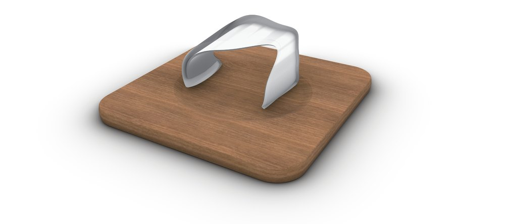
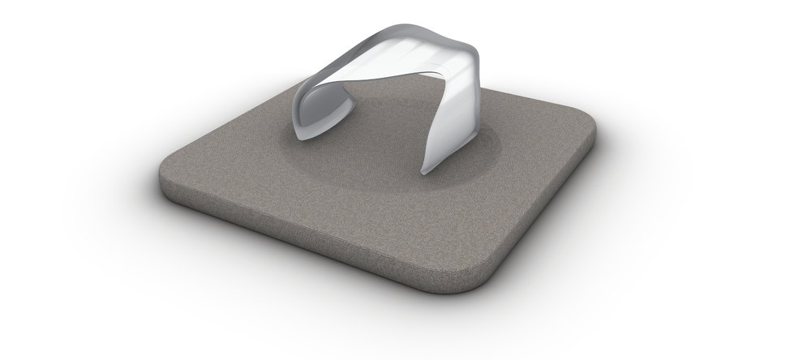
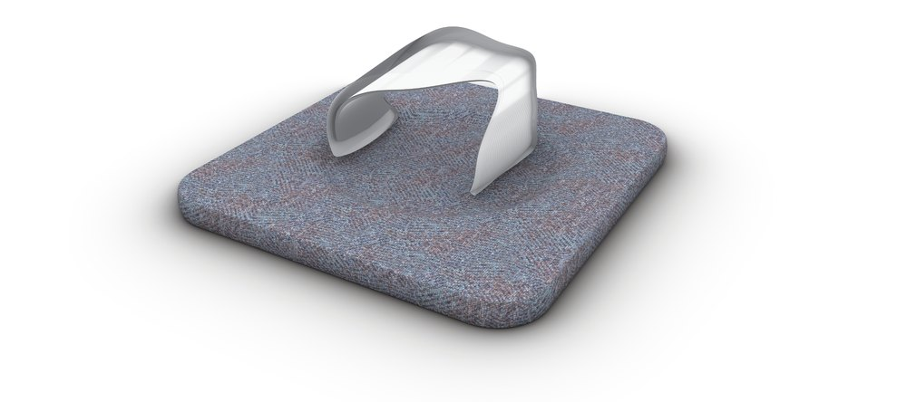
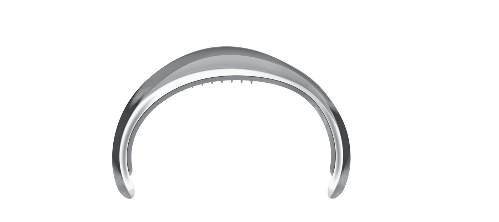
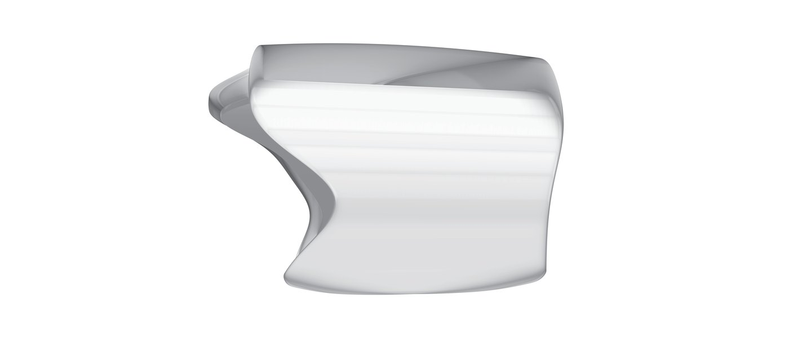
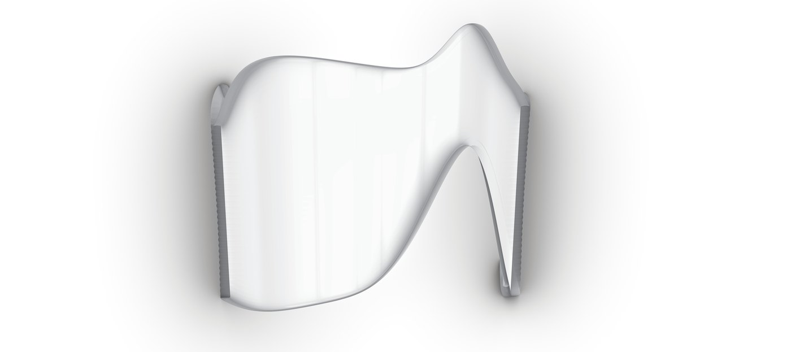
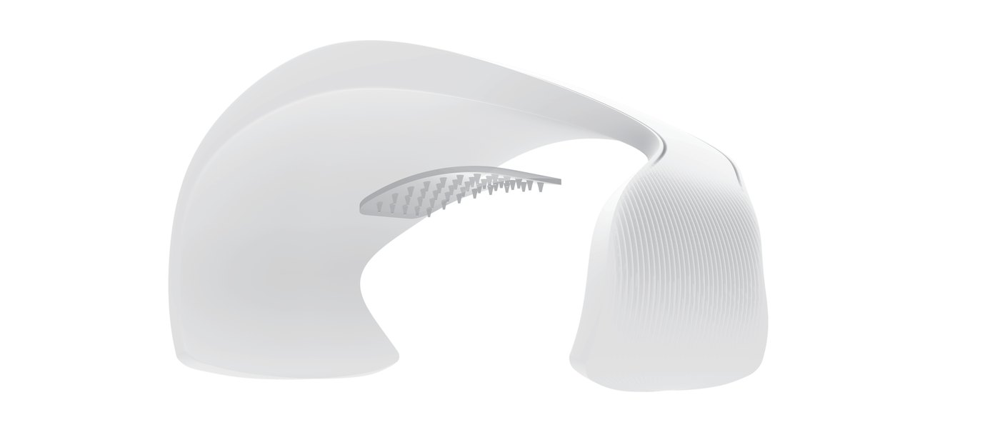
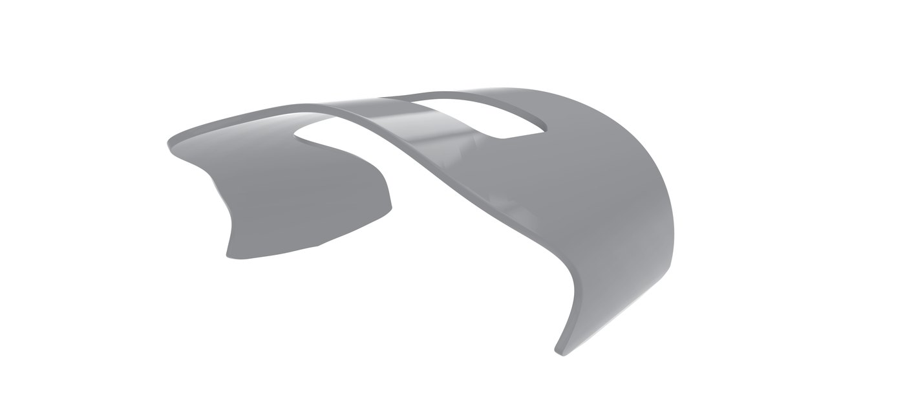
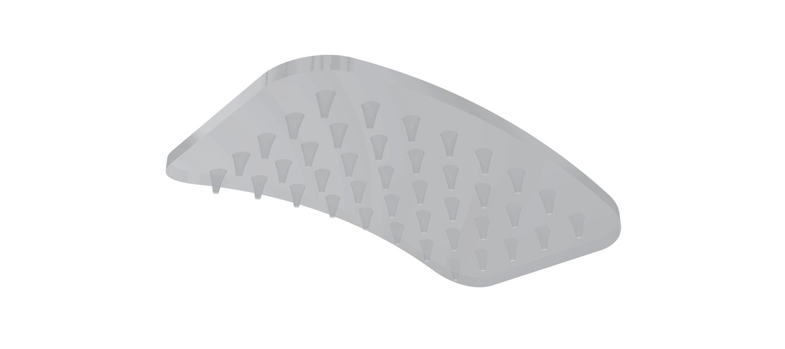

Nutrient chip 영양 공급 칩
A fixed chip inside the shell holds the nutrients and releases them toward the inner patch.
01 — For long working days
Support through a demanding day.
A wearable device with nutrient delivery for people working long hours. An open cuff rests on the forearm just above the wrist and stays out of the way through meetings, late reviews and skipped meals.
장시간 업무를 수행하는 직장인을 위한 영양 공급 기능을 갖춘 웨어러블 디바이스
02 — Form
One asymmetric surface twists around the forearm as an open cuff. A rhythmic rib pattern runs across the clear shell, and a long recess flows along the line of the arm.
03 — Closer to the skin
A fixed chip inside the shell holds the nutrients and releases them toward the inner patch.
A 26 × 16 mm patch on the soft inner liner meets the skin and passes the nutrients through a field of tiny needles.
Design concept. Function, efficacy and safety are not verified. 디자인 콘셉트이며 기능·효능·안전성은 검증되지 않았습니다.
04 — In use
05 — Between tasks
Take it off and set it on its desk stand. The cuff sits in a shallow round recess on a 145.6 mm square base.



06 — Form & dimensions






I R I S
Stay closer to your best.
Kim Namkyung 2019102475
Smart Convergence Design
Kyung Hee University · Department of Industrial Design
Graduation Exhibition 2026
경희대학교 산업디자인학과 스마트융합디자인 · 졸업전시회 2026
Design concept. Function, efficacy and safety are not verified.
Scan to view
on your phone휴대폰으로 보기